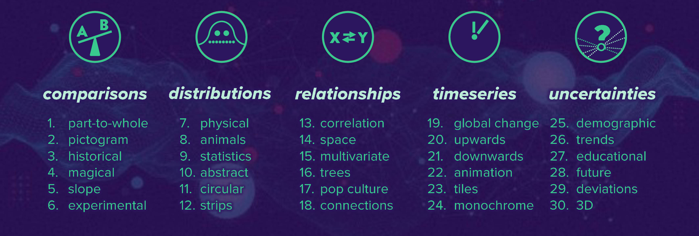
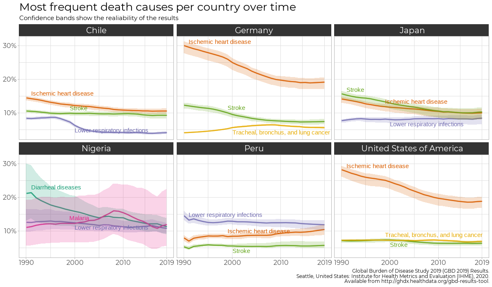
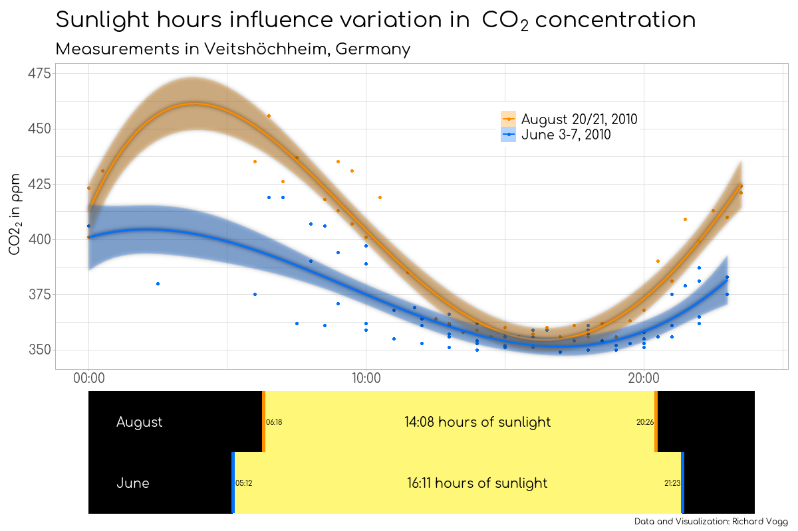
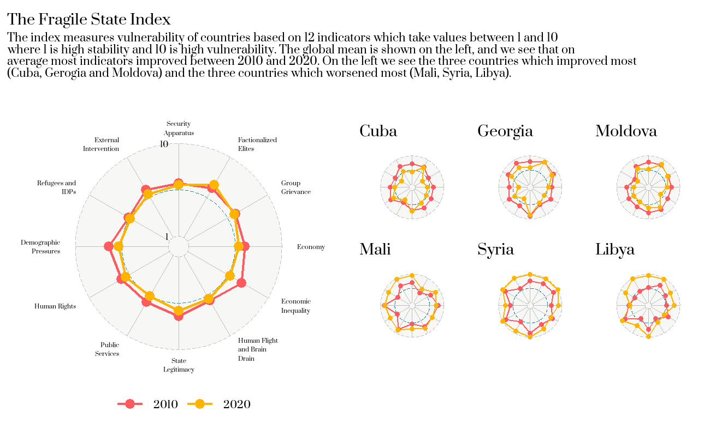
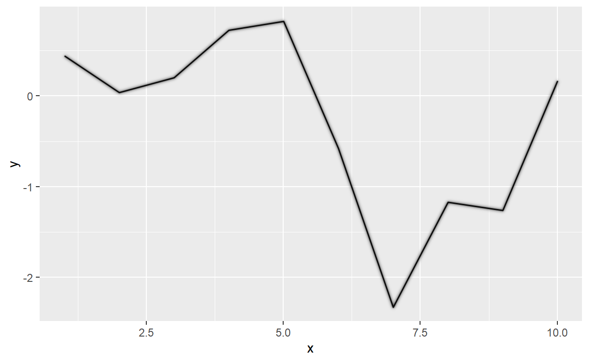
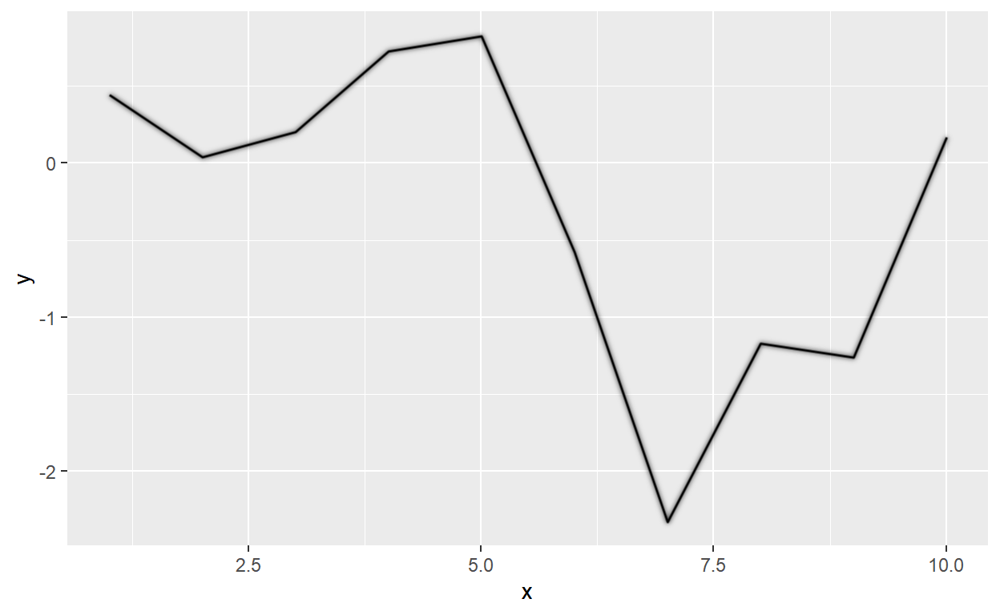
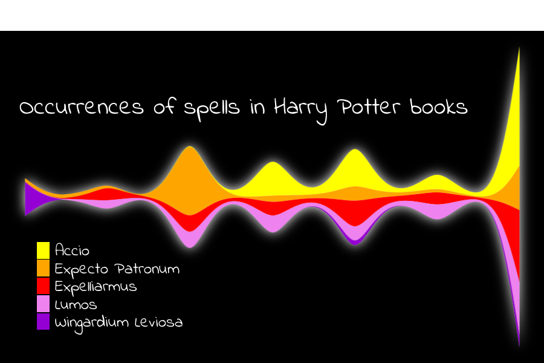
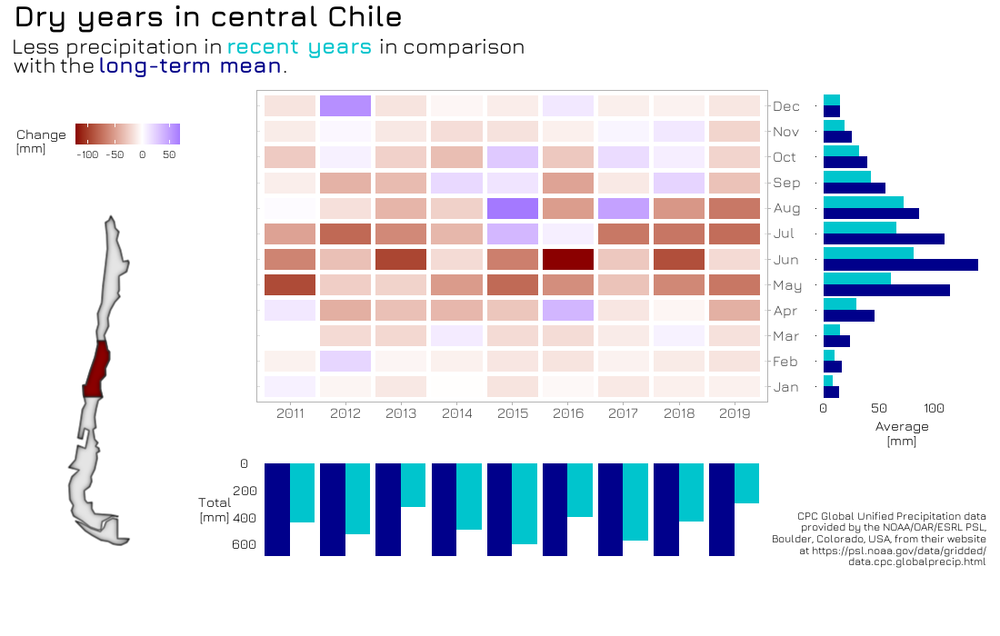
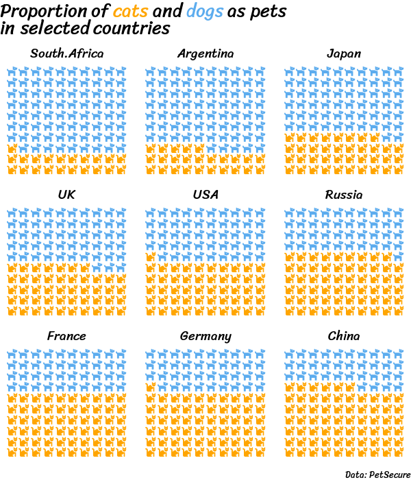

If you don’t feel like reading today and would just like to see all my results in a gallery, please visit this GitHub repository.
The challenge
The idea of the challenge is to create one plot every day. There were five topics and a subtopic for every day. Ideally each chart should be touching the topic and the subtopic, but the rules are not too strict - it is mainly about learning and producing charts.

I would like to structure my learning into three categories:
- Which new data sources did I get to know?
- Which packages did I find most useful?
- What else did I learn?
Data sources
I had a few frustrating moments during the challenge, and they were almost all related to datasets. Sometimes I did not have a great inspiration or a dataset at hand, so I spent a lot of time browsing through Kaggle and looking on Google for interesting datasets, while I felt that I was using the time I should actually spend on the visualization.
It helped that I had already worked with data in the past (TidyTuesdays, Kaggle). And just as Alex Cookson said in his great rstudio::global(2021) talk The Power of Great Datasets, you will be much more motivated if you have data that is interesting to you. So I looked on Kaggle and Google for things that I find interesting. I experienced that looking for data before knowing the topic can be easier, because in this case all that matters is if the dataset seems interesting. When you see the topic for the day, you can then decide whether your new dataset fits or not.
Here are some of my favorite datasets I used during the challenge:
The Big 5 personality test
This is a giant dataset from Kaggle (datasource: Open Psychometrics) of over 1 million answer sets of the famous Big 5 personality test. Participants have to rate how much they agree to 50 affirmations like:
- I feel comfortable around people.
- I get easily stressed out.
- I spend time reflecting on things.
You also get country data and response times for each question, so there is a lot to discover and many stories to be told. You can download the dataset here. If you want to get started and jump the process of data cleaning a little bit, get the questions and code from this repository.
Global Health Data
I discovered this data relatively late in the challenge and will definitely explore it further in the nearer future. It is about death causes in different countries with a lot (really a lot!) of detail. You can also see historical data for many of the last years. And it is completely customizable: You can select which aggregation level you wish and will get a link to download the desired data. (Be aware: If you select All countries, you will get All countries aggregated, so to get the data for all countries, you actually have to select all of them individually. Same with all causes, all genders etc.).

International soccer matches
A dataset containing all official international soccer matches and results between 1872 and 2021. If you like soccer, this one is definitely worth taking a look at. It will bring back some memories.
You can find it here on Kaggle.
Your own data
For me, working with my own data is the best. I used carbon dioxide measurements I did when I was at high school to show the strong influence of vegetation and photosynthesis on the CO2 concentration over the course of a day. This data feels so heartwarming because I remember how I got up at 3 am just to make a measurement, so each data point actually means something to me.

Similarly, I downloaded the recycling data from an app I was using in Chile which tracked how many plastic bottles and metal cans I recycled over the course of little more than a year.
And also a Twitter analysis feels more interesting when it is your own data you are looking at.
The Fragile State Index
The Fragile State Index is one of my currently favorite datasets. I already explored it in this blogpost but there is so much more to discover that I used it in three visualizations.

Packages
ggfx
On March 31, one day before the challenge started, Thomas Lin Pedersen announced a new package: ggfx. It allows to apply filters (like glow, blur or shadows) to any part of your ggplot or to the whole plot.
I counted that I used this package in every second submission! Two nice effects:
with_inner_glow()makes round shapes look 3-dimensional. Apply this to a round flag, and it looks almost like a button.with_outer_glow()makes lines look straight. In my opinion, it make a huge difference if you use the standard ggplot2 lines or apply a filter to it.
 

ggstream
David Sjoberg is the author of many amazing ggplot extension packages and they were widely used by many participants during the chart challenge. I used ggstream and it makes beautiful data visualization extremely easy!

Also, check his latest package ggsankey for making sankey charts with ggplot.
ggtext
Claus Wilke’s {ggtext} package also helped enormously with making plots better and easier to understand. It contains many cool text-related features, but the one I used most was to color the title or the subtitle of the plot. This helps to replace a legend or tell the story more efficiently.
corrmorant
When visualizing correlations between several variables it is good to have an overview. Roman Link created corrmorant which help with creating customized corrplots/pairplots in ggplot logic and style.

patchwork
This package by Thomas Lin Pedersen is awesome when it comes to assembling plots. Whether you want to put them side by side or on top of each other, you can achieve they layout you want with very easy syntax.
If the layout is getting somewhat more complex, it also has this beautiful option of describing it with letters (of course, you have to create the plots first, but assembling them is as easy as this with patchwork):
And this is the result of above’s code (after adding title and other annotations):

I used this package in many submissions, for example when looking at Precipitation in Chile.
Other tips
Pictogram
Pictograms can be a great way to show proportions, given that there are so many emojis to almost any topic. Using the waffle package, this is quite easy. However, I faced some difficulties to get the fonts set up correctly and also saw that others tweeted about this. In case that you would like to play around with pictograms and want to get set up, step by step, follow this tutorial for using icons in waffle.

Fonts
For a very long time I have wondered, how people make great visualizations with non-standard ggplot fonts. While doing Tidy Tuesdays in the past I have already learned how to use a font from Google Fonts - for example with this blog, but during this challenge I used this knowledge a lot more.
Once you have the packages installed, it is basically just going to Google Fonts, selecting a font you like (for this example “Indie Flower” - the font I used in the Harry Potter magical spells example above) and then adding these two lines to your code.
And later you call specify in your ggplot theme that you want this font to be used, either one by one for plot.title, legend.text etc. or for all texts:
Nice and easy and opens so many new options to make visualizations look better.
Harry Potter
There are two packages with the same name on GitHub, I used them both and found both very helpful.
Beautiful Harry Potter Color Palettes
All texts from the Harry Potter books.
Community
So far, I have only talked about learning by doing. But during the challenge I also learned many tricks by looking at other participants’ submissions and codes. The creativity and visualization capabilities of the others for each one of these topics was outstanding and looking for #30DayChartChallenge on Twitter will be worth a visit.
A big thank you to Cédric Scherer and Dominic Royé for organizing this challenge and to congratulations to all participants!